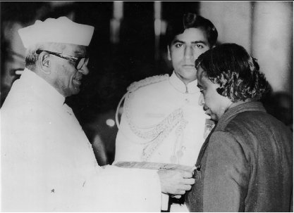
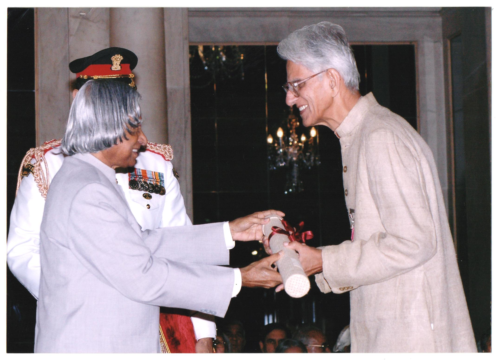

Biography
Dr. APJ Abdul Kalam was the eleventh President of India, serving from 2002 to 2007. He was born on May 15, 1931, in Rameswaram, Tamil Nadu, and studied physics as well as aeronautical engineering. In 2002, APJ Abdul Kalam was chosen as India’s 11th President, Having backing from both the ruling Bharatiya Janata as well as the opposing Indian National Congress After his one tenure as President, APJ Abdul Kalam resumed civilian life in teaching, writing, and public service.

As Chairman of Technology Information, Forecasting and Assessment Council (TIFAC) and as an eminent scientist, he led the country with the help of 500 experts to arrive at Technology Vision 2020 giving a road map for transforming India from the present developing status to a developed nation. Dr. Kalam has served as the Principal Scientific Advisor to the Government of India, in the rank of Cabinet Minister, from November 1999 to November 2001 and was responsible for evolving policies, strategies and missions for many development applications. Dr. Kalam was also the Chairman, Ex-officio, of the Scientific Advisory Committee to the Cabinet (SAC-C) and piloted India Millennium Mission 2020.
Education
Kalam was extremely earnest and diligent in his studies, but his teachers recognised him as having a tremendous desire to study. He finished his secondary studies at Ramanathapuram’s Schwartz Secondary School. In 1955, he graduated from Saint Joseph’s College at Tiruchirappalli with a diploma in physics. He subsequently went to Madras to further his education, graduating from the Engineering And Technology Institute with a diploma in aircraft engineering. His dream of becoming a military pilot was crushed when the IAF only had eight slots available, and he finished ninth. Following graduation, he worked as a scientist for the “Defense Research Service” and the “Aeronautical Development Establishment.”
He was born to a rather modest Muslim family. He was born as the youngest of five siblings. Despite financial difficulties, he was a shining performer in academia, particularly in mathematics. This exceptional academic performance led him to Saint Joseph's College, Tiruchirapalli, which granted him a Physics degree in 1954. Kalam then pursued Aeronautical Engineering at the Madras Institute of Technology and graduated in 1960.
As a Scientist
On graduation from the University of Madras in 1960, APJ Abdul Kalam returned to the Defence Research and Development organisation Organisation as a scientist (DRDO). He began his career by creating a tiny hovercraft, however his position with the DRDO did not persuade him. APJ Abdul Kalam was moved to the Indian Space Research Organisation (ISRO) in 1969 as the project head of India’s first Satellite Launch Vehicle, which successfully launched the Rohini satellite into relatively near orbit in July 1980.
Raja Ramanna also invited APJ Abdul Kalam to see the country’s first nuclear test, Laughing Buddha, as the spokesman of TBRL. However, he had never participated in its development.His career started with him designing a small hovercraft. However, he was not convinced by his choice of a job at the DRDO. Kalam was transferred to ISRO in 1969, where he was the project director of India's first satellite vehicle launch.
Presidency
Sir Kalam was the rightful 11th Indian President. His presidency lasted from July 25, 2002, to July 25, 2007. He was elected with a huge margin of victory in a presidential election in 2002. The National Democratic Alliances’ nomination for President was endorsed by the Samajwadi Party and the National Congress Party. He was often referred to as the people’s President because of his numerous contributions to the well-being of the people and the country. He was daring and brave enough to make and implement difficult, delicate, or contentious judgments. Perhaps the most difficult Act he had to sign was the “office of profit.” Under the English Settlement Act of 1701 in 1701, the “office of profit” indicates that no one individual who is a professional setup process underneath the royal family or who has any arrangement with or is receiving a pension from the prince does have the ability to work for the “House of Commons.” This will give the royal family no influence on administrative conditions.
e was the Scientific Adviser to Defence Minister and Secretary, Department of Defence Research & Development from July 1992 to December 1999. During this period he led to the weaponisation of strategic missile systems and the Pokhran-II nuclear tests in collaboration with Department of Atomic Energy, which made India a nuclear weapon State. He also gave thrust to self-reliance in defence systems by progressing multiple development tasks and mission projects such as Light Combat Aircraft.
Awards and Achievements
Kalam received several honours during his lifetime. In 1981, he was granted the “Padma Bhusan,” the Republic of India’s third-highest civilian honour. Then, in 1990, he was granted the Padma Vibhushan, the Republic of India’s second-highest civilian honour. In 1997, the Indian government awarded Abdul Kalam the “Bharat Ratna,” the Republic of India’s highest civilian honour, in addition to the “Indira Gandhi Award of National Integration” even by “Indian National Congress,” which is named after former Prime Minister Indira Gandhi. The following year, in 1998, he was given the “Veer Savarkar Award.” The SASTRA “Ramanujan Award” was bestowed to him in 2000. In 2007, he was awarded the “King Charles II Medal” by the United Kingdom for his contributions to scientific advancements in India. In 2009, he was awarded the “Hoover Medal,” an American honour awarded to outstanding persons who make extracurricular efforts.
Padma Bhushan (1981)
Padma Vibhushan (1990)
highest civilian award Bharat Ratna (1997).

Books he wrote
In his lifetime, he published several works, including Agni ki Udaan (1999), India 2020 (1998), Ignited Minds (2002), Naa Jeevana Gamanam (2013), Turning Points: A Journey Across Difficulties (2012), Indominate Spirit (2006), and You Are Born To Blossom (2007). (2008). You can include them in the APJ Abdul Kalam Essay and some other writers. They have devoted books to him, including APJ Abdul Kalam by Arun Tiwari and Advantage of India by Srijan Pal Singh